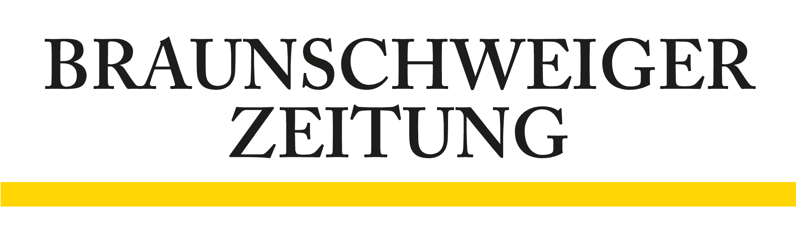
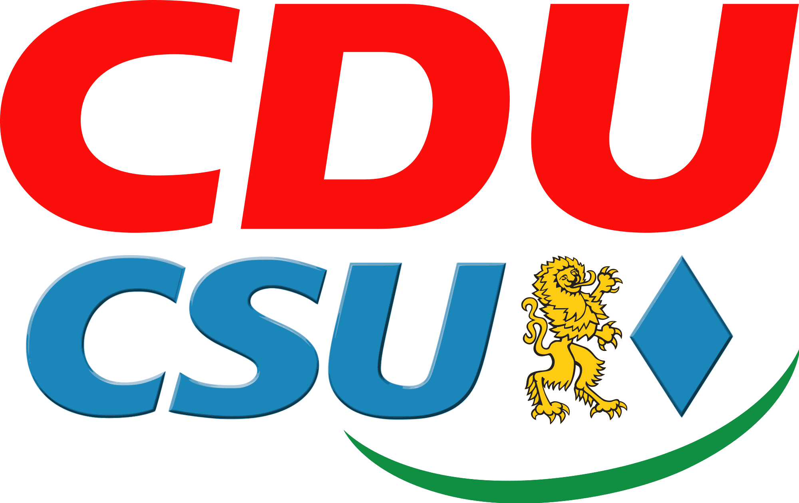
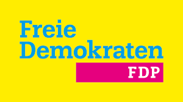
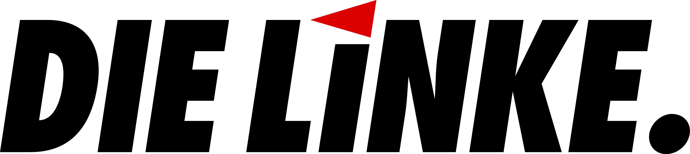
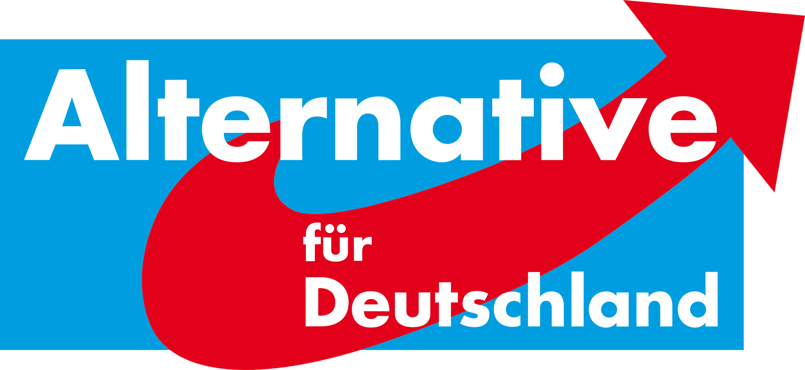

Wahlkarte
So hat Braunschweig gewählt
Bundestagswahl - So hat Braunschweig gewählt

Direktkandidat WK 50: Dr. Carola Reimann (SPD)
Zweitstimmen (WK 50 in Prozent)

29

26,3

11,8

10

9,3

8,4
Zweitstimmen in Braunschweig: CDU: 29 +++ SPD: 26,3 +++ Grüne: 11,8 +++ FDP: 13,3 +++ Linke: 13,3 +++ AfD: 13,3 +++ Direktkandidatin: Dr. Carola Reimann (SPD)